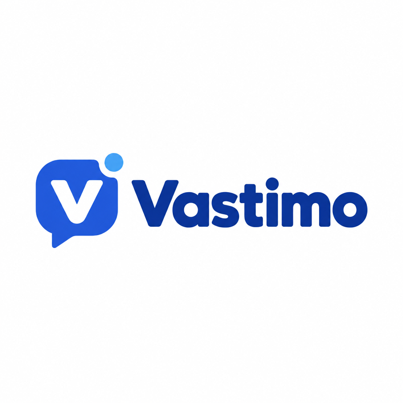

Tietosuojaseloste
Koskee Vastimon toteuttamaa asiakaspalveluavustajaa, jonka yritys on ottanut käyttöön verkkosivullaan. Päivitetty 1.11.2026.
Kuka vastaa tiedoistasi
Rekisterinpitäjä on yritys, jonka asiakaspalveluavustajan kanssa keskustelet (yrityksen nimi näkyy keskusteluikkunan yläosassa). Vastimo toimittaa ja ylläpitää avustajaa yrityksen puolesta ja käsittelee tietoja vain yrityksen ohjeiden mukaan (henkilötietojen käsittelijä).
Mitä avustaja on
Avustaja on automaattinen ohjelma, ei ihminen. Se vastaa vain yrityksen sille antamien tietojen perusteella eikä käytä tekoälykielimallia. Se ei varaa aikoja: jättämäsi ajanvarauspyynnön vahvistaa aina yritys itse.
Mitä tietoja tallennetaan ja miksi
- Ajanvarauspyyntö: palvelu, aikatoive, nimesi ja yhteystietosi. Tarkoitus: yritys voi vastata pyyntöösi.
- Yhteydenotto ihmiselle: viimeiset viestit keskustelusta ja antamasi yhteystieto. Tarkoitus: yritys voi hoitaa asiasi ilman, että toistat sen.
- Vastaamatta jäänyt kysymys: kysymyksen teksti ilman yhteystietoa. Tarkoitus: yritys voi täydentää avustajan tietoja.
Muuta keskustelua ei tallenneta pysyvästi. Keskustelun tila säilyy palvelimen muistissa enintään tunnin ilman toimintaa. Älä kirjoita keskusteluun arkaluonteisia tietoja, kuten terveys- tai henkilötunnustietoja.
Peruste
Käsittely perustuu yrityksen oikeutettuun etuun hoitaa asiakaspalvelua ja vastata sinun pyyntöösi (tietosuoja-asetus 6(1)(f)) sekä pyyntösi toteuttamiseen, kun jätät yhteystietosi vapaaehtoisesti.
Kuinka kauan tiedot säilyvät
Kirjaukset poistetaan automaattisesti, kun niitä ei ole päivitetty yrityksen asettamaan säilytysaikaan mennessä. Oletus on 90 päivää, ja yritys voi valita ajan väliltä 7–365 päivää. Yritys voi poistaa kirjauksen myös aiemmin.
Kenelle tietoja luovutetaan
Tiedot näkyvät vain kyseiselle yritykselle ja Vastimon ylläpitäjälle tuen tai vianselvityksen ajaksi. Yritysten tiedot pidetään erillään: yksi yritys ei näe toisen yrityksen kirjauksia. Palvelu on isännöity Render-palvelussa Frankfurtissa (EU). Tietoja ei myydä eikä käytetä markkinointiin tai mallien kouluttamiseen. Yritys voi erikseen ottaa käyttöön ilmoituksen omaan työkaluunsa; siitä sovitaan tällöin yrityksen kanssa. Selain tallentaa vain istuntotunnisteen väliaikaisesti selaimen muistiin; evästeitä ei käytetä.
Oikeutesi
Voit pyytää pääsyä tietoihisi, niiden oikaisua tai poistamista sekä vastustaa käsittelyä. Pyydä sitä yritykseltä, jonka avustajan kanssa keskustelit, tai kirjoita osoitteeseen vastimo@me.pazi.ai, niin Vastimo välittää pyynnön yritykselle tai poistaa tiedot yrityksen ohjeesta. Nimeä mukaan yritys ja antamasi yhteystieto (sähköposti tai puhelin), jotta tiedot löytyvät. Voit myös tehdä valituksen tietosuojavaltuutetun toimistolle (tietosuoja.fi).
Rekisterinpitäjänä toimiva yritys täydentää tähän omat yhteystietonsa ja voi liittää oman selosteensa.